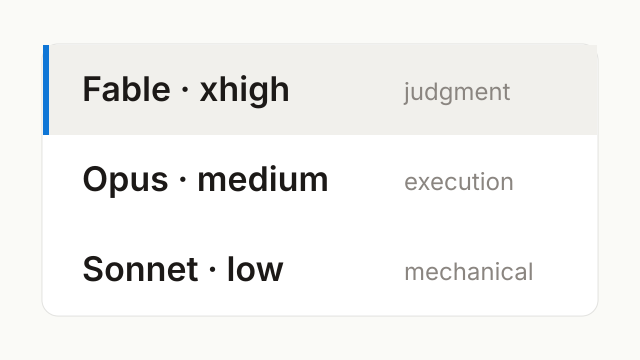

Claude Combo
Pick a Claude Code model and effort level in one keystroke — a VS Code QuickPick of the combos you define, instead of /model then /effort.
Kisoo Kim
Little apps and tools I make to scratch my own itch — and share.
Recent Notes
View all →Windows · Debugging
Windows says only that a program's side-by-side configuration is incorrect. The event log behind it names the exact runtime you're missing.
Claude Code · Workflow
Claude's weekly limit resets on a day assigned at random — one paste into the browser console reveals it before you pay.
MacTab · macOS & Windows
Why I replaced my Mac's ⌘Tab with a real window switcher — then rebuilt it, natively, for Windows.
Programs

Pick a Claude Code model and effort level in one keystroke — a VS Code QuickPick of the combos you define, instead of /model then /effort.

Your Claude Code & Codex usage limits, always in sight — 5-hour and 7-day windows in a panel that pops from a screen corner.

A faster window switcher — every window in most-recent order, with a live preview of the one you're about to switch to.

Remove unwanted pages from any PDF and save a clean copy — with a one-click JSTOR cover remover. Runs entirely in your browser.

Paper discovery for the social & behavioral sciences — a clean feed of new publications, filtered by field and time.

A week-at-a-glance to-do planner — last week, this week, and next, all in one calendar view.